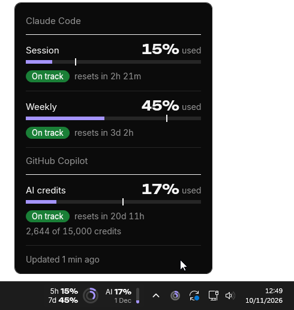

Your GitHub Copilot and Claude Code usage, always in view on your taskbar.
Beside the clockHover the pill for when each limit resets, click it for the details, right-click it to change how they look.

Reading it
GitHub Copilot's monthly AI credits, with the reset date and a small level bar. Only with a credit budget (Business, Enterprise or Pro).
The five-hour limit. In the rings it's the outer one.
The weekly limit, the inner ring.
At the pace you're going, whether you reach the limit before it resets.
Bars shows what you've used, the other two what's left. Right-click the pill or the tray icon, then Style.
Bars in Sobreiro's purple or your Windows accent, and the pill or just the tray icon. Right-click the pill or the tray icon. Dark or light follows Windows.


Shows
Style


Run it
Until the app is signed, Windows may warn about an unknown publisher: More info, then Run anyway. The pill appears beside the clock and fills in within seconds while the Copilot CLI, gh or Claude Code is signed in. That's it.
For Copilot, sign in with the Copilot CLI or gh auth login: Sobreiro doesn't read the sign-in VS Code or Visual Studio keeps. To also take Claude Code's numbers from the terminal, right-click the pill and choose Connect to Claude Code. The manual has the rest.
What it sends
Every 5 minutes it asks api.github.com for your Copilot AI credits and api.anthropic.com for your Claude Code usage, each with a sign-in already on this PC. It looks for both on every PC, whichever you use. It never stores, logs or renews those tokens, and nothing else leaves your machine.
GitHub and Anthropic can change theirs, and Anthropic's terms don't allow third-party apps to use Claude sign-ins. If you'd rather not, don't install it.
Known limits
Then, if you connected it, the numbers update only when Claude Code answers in the terminal. The VS Code extension and the desktop app don't run the status line.
The pill shows on the primary monitor's taskbar, at the bottom. If it can't find the tray icons it hides, and the tray icon carries on.